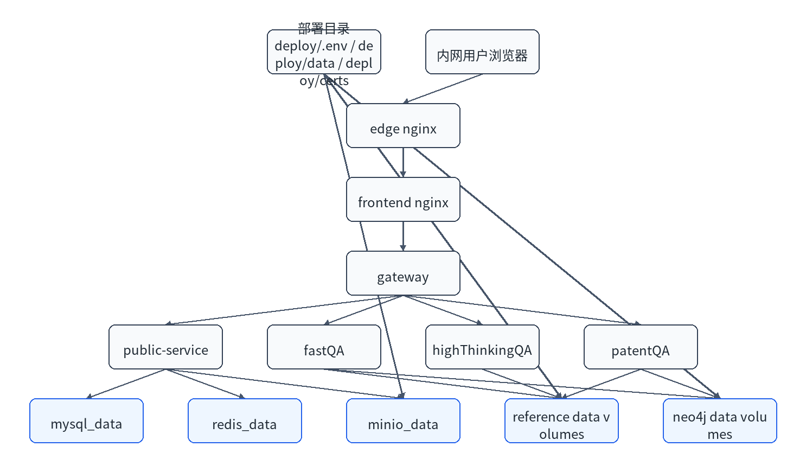
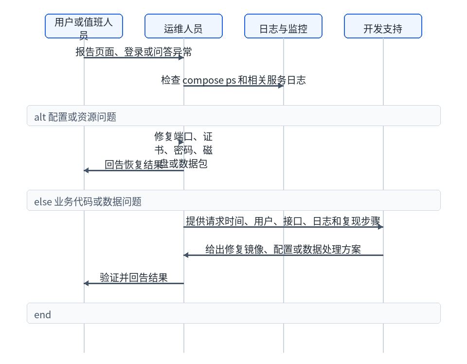

| 版本 | 日期 | 修订人 | 修订说明 |
|---|---|---|---|
| V1.0 | 2026/05/20 | 项目组 | 初版 |
| 项目 | 说明 |
|---|---|
| 系统名称 | LiFeO4Agent |
| 系统版本 | V1.0 |
| 业务描述 | 面向电池材料研发的文献、深度、专利和文件智能问答系统。 |
| 运维对象 | Docker 容器、MySQL、Redis、MinIO、Neo4j、证书、配置和数据包。 |

| 端口变量 | 默认用途 | 访问方式 | 说明 |
|---|---|---|---|
HTTPS_PUBLISH_PORT | HTTPS 入口 | 浏览器访问 | 对最终用户开放。 |
HTTP_PUBLISH_PORT | HTTP 跳转 | 浏览器访问 | 跳转到 HTTPS。 |
MYSQL_PUBLISH_PORT | MySQL | 运维网段 | 按安全策略决定是否开放。 |
REDIS_PUBLISH_PORT | Redis | 运维网段 | 按安全策略决定是否开放。 |
MINIO_API_PUBLISH_PORT | MinIO API | 运维或服务访问 | 对象存储 API。 |
MINIO_CONSOLE_PUBLISH_PORT | MinIO 控制台 | 运维访问 | 建议限制来源。 |
| 角色 | 权限 | 添加方法 |
|---|---|---|
| 管理员 | 管理用户、部门、人员、配额，可查看管理后台。 | bootstrap 管理员创建后，可在后台新增管理员。 |
| 普通用户 | 使用问答、上传文件、查看原文、维护个人信息。 | 自助注册或管理员创建。 |
| 运维人员 | 服务器、Docker、证书、备份和日志操作。 | 由部署方在服务器权限体系中授权。 |
| 检查项 | 命令 | 建议阈值 |
|---|---|---|
| CPU | top 或 htop | 长期高于 80% 需分析。 |
| 内存 | free -h | 可用内存过低需排查容器。 |
| 磁盘 | df -h | 使用率超过 80% 预警，超过 90% 处理。 |
| Docker 空间 | docker system df | 关注镜像、volume 和 build cache。 |
| 容器状态 | docker compose --env-file deploy/.env -f deploy/docker-compose.yml ps | 长期服务 running/healthy，seed job Exited (0)。 |
| 服务 | 日志命令 | 关注关键字 |
|---|---|---|
| gateway | docker compose --env-file deploy/.env -f deploy/docker-compose.yml logs --tail=200 gateway | quota、route、timeout、5xx。 |
| public-service | docker compose --env-file deploy/.env -f deploy/docker-compose.yml logs --tail=200 public-service | auth、mysql、quota、minio。 |
| fastQA | docker compose --env-file deploy/.env -f deploy/docker-compose.yml logs --tail=200 fastqa | embedding、rerank、LLM、chroma。 |
| highThinkingQA | docker compose --env-file deploy/.env -f deploy/docker-compose.yml logs --tail=200 highthinkingqa | embedding、LLM、stage。 |
| patentQA | docker compose --env-file deploy/.env -f deploy/docker-compose.yml logs --tail=200 patent | intent、rerank、graph、tables。 |
| seed job | docker compose --env-file deploy/.env -f deploy/docker-compose.yml logs minio-seed | package not found、sha256、marker。 |
reference data 由数据包导入，运行时不应手工修改对应 named volume。用户上传文件和会话数据属于运行态数据，应纳入备份。MinIO 中初始原文可重建，但运行期新增对象需要单独保护。
Redis 用于缓存和任务状态。清理 Redis 可能影响正在进行的任务和会话状态，不建议在业务高峰期执行。若必须清理，应先停止业务服务或确认没有正在执行的问答任务。
当前 V1.0 交付主要依赖容器服务和用户触发请求，不默认要求宿主机 cron 任务。若部署方自行增加备份 cron，应记录脚本路径、执行用户、执行时间和保留策略。
deploy/.env 存在且未保留占位值。deploy/data/manifest.json 和数据包存在。deploy/certs 下证书和私钥存在。bash deploy/scripts/preflight_check.sh deploy/.env docker compose --env-file deploy/.env -f deploy/docker-compose.yml up -d docker compose --env-file deploy/.env -f deploy/docker-compose.yml ps
启动顺序由 compose 依赖控制：MySQL、Redis、MinIO 先启动；MinIO 和 reference/Neo4j seed 完成后业务服务启动；最后 edge 对外提供 HTTPS。
docker compose --env-file deploy/.env -f deploy/docker-compose.yml down
该命令停止并删除容器，但不会删除 named volume。不要在生产环境随意执行 docker compose down -v，该命令会删除数据卷。
docker compose --env-file deploy/.env -f deploy/docker-compose.yml restart fastqa
适用于修改模型配置、单服务镜像更新或排障后重启。
| 备份对象 | 频率建议 | 保留建议 | 说明 |
|---|---|---|---|
| MySQL | 每日 | 按客户制度 | 用户、会话、配额等核心业务数据。 |
| MinIO 运行期对象 | 每日或按增量 | 按客户制度 | 初始原文可重建，用户上传对象需备份。 |
deploy/.env | 每次变更 | 保留最近多个版本 | 包含密钥，应加密保存。 |
| 证书和私钥 | 每次变更 | 保留有效版本 | 私钥需严格限制权限。 |
| 数据包和镜像包 | 每次交付 | 至少保留当前和上一版本 | 用于重建和回滚。 |
deploy 目录。deploy/.env、证书、镜像包和数据包。若只更新了某个服务镜像，可重新加载上一版本镜像并重启对应服务。若涉及数据库 schema 或数据包变化，应先评估是否需要恢复数据库或强制重导数据。
| 故障 | 定位步骤 | 处理建议 |
|---|---|---|
| 页面打不开 | 检查域名、端口、edge 和 frontend 日志。 | 修复 DNS、证书或端口映射。 |
| 登录失败 | 检查 public-service、MySQL、用户状态。 | 重置密码或启用账号。 |
| 问答失败 | 先看 gateway，再看对应 QA 后端。 | 检查模型、向量库、MinIO 和 Neo4j。 |
| 原文失败 | 检查 MinIO bucket、对象路径和 minio-seed。 | 补齐数据包或重新导入。 |
| 图谱失败 | 检查 Neo4j seed 和 healthcheck。 | 重新加载 dump 或恢复 volume。 |
LiFeO4Agent 运维工作以“服务可访问、数据可恢复、问题可定位、变更可回滚”为目标。运维人员应重点关注容器健康、磁盘容量、MySQL 运行态数据、MinIO 对象、模型服务连通性和证书有效期。
| 对象 | 是否由本系统维护 | 说明 |
|---|---|---|
| 业务容器和 compose 编排 | 是 | 由部署目录中的 compose 文件管理。 |
| MySQL、Redis、MinIO、Neo4j 容器 | 是 | V1.0 内置容器，生产策略可按客户规范替换。 |
| 大模型、embedding、rerank、intent 服务 | 否 | 由部署方模型平台提供，本系统通过配置连接。 |
| 内网 DNS 和证书信任链 | 否 | 由客户基础设施维护。 |
| 服务器硬件和操作系统 | 否 | 由客户基础设施或运维团队维护。 |
| 服务 | 类型 | 主要职责 | 异常影响 |
|---|---|---|---|
edge | 入口 | HTTPS 终止、HTTP 跳转、代理 frontend。 | 用户无法访问页面。 |
frontend | 前端 | 提供静态页面和前端路由。 | 页面 404 或资源加载失败。 |
gateway | 接入后端 | 统一 API、SSE 代理、配额协调。 | 所有业务请求失败。 |
public-service | 公共服务 | 用户、会话、文件、配额、原文代理。 | 登录、管理和文件能力失败。 |
fastqa | 问答后端 | 文献问答。 | 文献模式不可用。 |
highthinkingqa | 问答后端 | 深度问答。 | 深度模式不可用。 |
patent | 问答后端 | 专利问答。 | 专利模式不可用。 |
mysql | 数据库 | 用户态业务数据。 | 登录、会话和管理功能失败。 |
redis | 缓存 | 缓存、任务和短期状态。 | 任务状态和部分缓存异常。 |
minio | 对象存储 | 论文、专利和上传文件。 | 原文和文件问答失败。 |
neo4j-literature | 图数据库 | 文献图谱。 | 文献图谱增强不可用。 |
neo4j-patent | 图数据库 | 专利图谱。 | 专利图谱增强不可用。 |
| 对象 | 用途 | 运维建议 |
|---|---|---|
deploy/.env | 生产配置和密钥。 | 变更前备份，严禁公开。 |
deploy/data | 离线数据包和 manifest。 | 保留当前版本和上一版本。 |
deploy/certs | HTTPS 证书和私钥。 | 监控有效期，私钥限制权限。 |
mysql_data | MySQL 数据卷。 | 必须定期备份。 |
minio_data | MinIO 对象数据卷。 | 运行期上传对象应备份。 |
*_ref_data | 向量库和 reference 数据。 | 可由数据包重建，通常不手工备份。 |
neo4j_*_data | 图谱数据。 | 可由 dump 重建，生产变更后按需备份。 |
docker compose --env-file deploy/.env -f deploy/docker-compose.yml exec mysql mysqladmin ping -uroot -p
成功结果示例：mysqld is alive。若返回认证失败，应检查 MYSQL_ROOT_PASSWORD 是否与初始化时一致；若容器不可连接，应先检查容器健康和磁盘空间。
MinIO 巡检重点为 bucket 是否存在、对象数量是否符合数据包统计、运行期上传文件是否可读。对象缺失时优先检查 minio-seed 日志和 marker。
| 检查项 | 正常现象 | 异常处理 |
|---|---|---|
| bucket | MINIO_BUCKET 存在。 | 检查 minio-init 日志。 |
| 论文目录 | papers/ 下有对象。 | 检查 minio-originals.tar.zst。 |
| 专利目录 | patent/originals/ 下有对象。 | 重新执行 MinIO seed。 |
| tables | 带 tables 的专利有 structured/tables.json。 | 检查数据包构建阶段 tables backfill。 |
模型巡检不直接在宿主机暴露密钥。建议通过三类问答请求观察日志，确认 LLM、intent、embedding、rerank 的调用阶段和耗时是否正常。
| 模型类型 | 涉及服务 | 日志关注点 |
|---|---|---|
| LLM | fastQA、highThinkingQA、patentQA | chat completions 请求、stream 输出、400/401/timeout。 |
| Intent | fastQA、patentQA | 是否启用、模型名、分类结果和错误。 |
| Embedding | fastQA、highThinkingQA、patentQA | 向量化请求是否成功、维度是否匹配。 |
| Rerank | fastQA、patentQA | 候选数量、排序结果、provider 是否为 none。 |
以下命令为运维记录模板，执行前应根据现场账号、路径和安全规范调整。
docker compose --env-file deploy/.env -f deploy/docker-compose.yml exec mysql mysqldump -uroot -p agentcode > backup-agentcode.sql
成功结果示例：生成 backup-agentcode.sql，文件大小大于 0。失败结果示例：Access denied for user，应检查密码或执行用户。
tar -czf deploy-config-backup.tgz deploy/.env deploy/certs deploy/docker-compose.yml
成功结果示例：生成配置备份包。该备份包含敏感信息，必须加密保存并限制访问。
